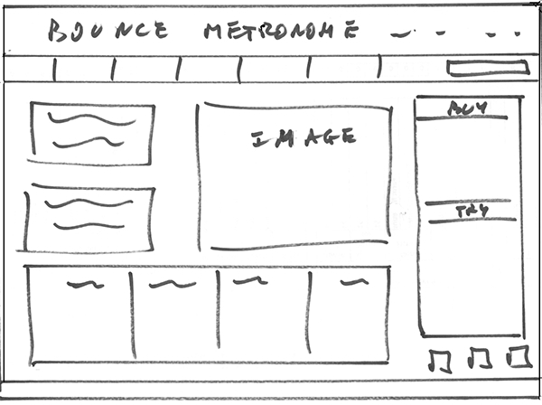
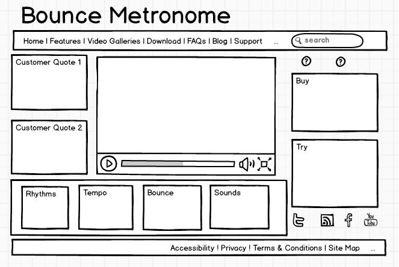
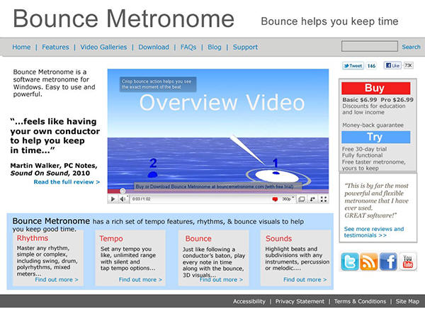

Visual Studio 2013 Lesson : WireFraming
[Lesson 37] <<[Contents] >>[Lesson 39]
Wireframing
Learning objective
By the end of this section you should be able to use the
following design notation
associated with programming paradigms:
Wireframing (Interface design).
The user interface can have a profound effect on the
success or failure of a software
project. Think of how modern operating systems have
changed the way users interact
with them, despite the fact that the functions of an
operating system has remained
substantially unchanged, and they can often still be
controlled form a command line
if necessary.
Wireframes are used to design navigation structures and
user interfaces to software
and are an essential design tool which enables both the
designer to share and test their
ideas, and allows the client to be part of the design
process.
When creating a prototype during software development,
it is often useful to be able to
create the interface for an application without
including any functionality other than the
menu drop down or dialog box selection. This allows the
client to be part of the design
team, particularly when a rapid prototyping development
methodology is being used.
A wireframe can be anything from a sketch outlining the
user interface to a program
or the navigational structure of a web page, to a
detailed design which has been built
using a graphics package or dedicated wireframing
software. The amount of detail in a
wireframe and the number of iterations it goes through
in the design process will depend
upon the software development methodology being used.
The process may start with a rough sketch of the
interface:

Then a wireframing tool may be used to create a more
detailed design:

Finally a detailed mock-up might be produced using a
graphic design tool:

There are a number of stand-alone and online wireframing
programs which can be used
to design interfaces for web applications or stand-alone
software. These programs often
provide the option of design prototypes which the user
can interact with to illustrate
external links, menu options, dialogue boxes etc.
Wireframes
are a useful design tool for the user interface to a web
application or a stand-alone software.